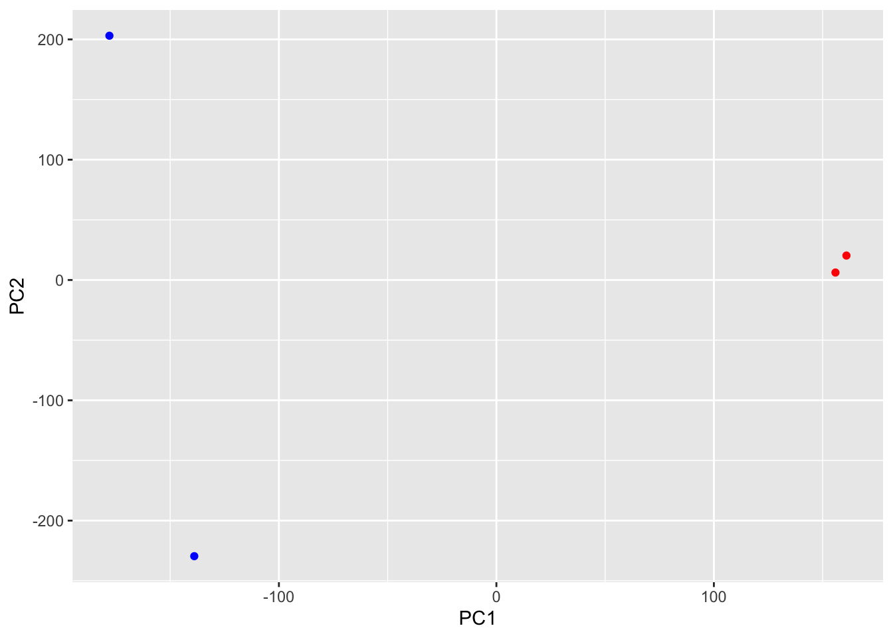

folders <- list.files(pattern = "_quant")
files <- paste0(folders, "/abundance.h5")Calss17: Cloud SRA data analysis
Downstream Analysis
file.exists(files)[1] TRUE TRUE TRUE TRUEnames(files) <- sub("_quant","",folders)
files SRR2156848 SRR2156849
"SRR2156848_quant/abundance.h5" "SRR2156849_quant/abundance.h5"
SRR2156850 SRR2156851
"SRR2156850_quant/abundance.h5" "SRR2156851_quant/abundance.h5" Load up the tximport package
library(tximport)
txi.kallisto <- tximport(files, type = "kallisto", txOut = TRUE)1 2 3 4 Remove zero count genes
Before subsequent analysis, we might want to filter out those annotated transcripts with no reads:
to.keep <- rowSums(txi.kallisto$counts) > 0
kset.nonzero <- txi.kallisto$counts[to.keep,]nrow(kset.nonzero)[1] 94561and thos with no change over the samples
keep2 <- apply(kset.nonzero,1,sd)>0
x <- kset.nonzero[keep2,]PCA
pca <- prcomp(t(x), scale=TRUE)
summary(pca)Importance of components:
PC1 PC2 PC3 PC4
Standard deviation 183.6379 177.3605 171.3020 1e+00
Proportion of Variance 0.3568 0.3328 0.3104 1e-05
Cumulative Proportion 0.3568 0.6895 1.0000 1e+00library(ggplot2)
ggplot(pca$x) +
aes(PC1, PC2) +
geom_point(col=c("blue","blue","red","red"))
DESeq
library(DESeq2)Warning: package 'DESeq2' was built under R version 4.3.3Loading required package: S4VectorsWarning: package 'S4Vectors' was built under R version 4.3.2Loading required package: stats4Loading required package: BiocGenerics
Attaching package: 'BiocGenerics'The following objects are masked from 'package:stats':
IQR, mad, sd, var, xtabsThe following objects are masked from 'package:base':
anyDuplicated, aperm, append, as.data.frame, basename, cbind,
colnames, dirname, do.call, duplicated, eval, evalq, Filter, Find,
get, grep, grepl, intersect, is.unsorted, lapply, Map, mapply,
match, mget, order, paste, pmax, pmax.int, pmin, pmin.int,
Position, rank, rbind, Reduce, rownames, sapply, setdiff, sort,
table, tapply, union, unique, unsplit, which.max, which.min
Attaching package: 'S4Vectors'The following object is masked from 'package:utils':
findMatchesThe following objects are masked from 'package:base':
expand.grid, I, unnameLoading required package: IRangesLoading required package: GenomicRangesLoading required package: GenomeInfoDbWarning: package 'GenomeInfoDb' was built under R version 4.3.3Loading required package: SummarizedExperimentWarning: package 'SummarizedExperiment' was built under R version 4.3.2Loading required package: MatrixGenericsLoading required package: matrixStatsWarning: package 'matrixStats' was built under R version 4.3.3
Attaching package: 'MatrixGenerics'The following objects are masked from 'package:matrixStats':
colAlls, colAnyNAs, colAnys, colAvgsPerRowSet, colCollapse,
colCounts, colCummaxs, colCummins, colCumprods, colCumsums,
colDiffs, colIQRDiffs, colIQRs, colLogSumExps, colMadDiffs,
colMads, colMaxs, colMeans2, colMedians, colMins, colOrderStats,
colProds, colQuantiles, colRanges, colRanks, colSdDiffs, colSds,
colSums2, colTabulates, colVarDiffs, colVars, colWeightedMads,
colWeightedMeans, colWeightedMedians, colWeightedSds,
colWeightedVars, rowAlls, rowAnyNAs, rowAnys, rowAvgsPerColSet,
rowCollapse, rowCounts, rowCummaxs, rowCummins, rowCumprods,
rowCumsums, rowDiffs, rowIQRDiffs, rowIQRs, rowLogSumExps,
rowMadDiffs, rowMads, rowMaxs, rowMeans2, rowMedians, rowMins,
rowOrderStats, rowProds, rowQuantiles, rowRanges, rowRanks,
rowSdDiffs, rowSds, rowSums2, rowTabulates, rowVarDiffs, rowVars,
rowWeightedMads, rowWeightedMeans, rowWeightedMedians,
rowWeightedSds, rowWeightedVarsLoading required package: BiobaseWelcome to Bioconductor
Vignettes contain introductory material; view with
'browseVignettes()'. To cite Bioconductor, see
'citation("Biobase")', and for packages 'citation("pkgname")'.
Attaching package: 'Biobase'The following object is masked from 'package:MatrixGenerics':
rowMediansThe following objects are masked from 'package:matrixStats':
anyMissing, rowMedianssampleTable <- data.frame(condition = factor(rep(c("control", "treatment"), each = 2)))
rownames(sampleTable) <- colnames(txi.kallisto$counts)sampleTable condition
SRR2156848 control
SRR2156849 control
SRR2156850 treatment
SRR2156851 treatmentdds <- DESeqDataSetFromTximport(txi.kallisto, colData = sampleTable, design = ~condition)using counts and average transcript lengths from tximportdds <- DESeq(dds)estimating size factorsusing 'avgTxLength' from assays(dds), correcting for library sizeestimating dispersionsgene-wise dispersion estimatesmean-dispersion relationship-- note: fitType='parametric', but the dispersion trend was not well captured by the
function: y = a/x + b, and a local regression fit was automatically substituted.
specify fitType='local' or 'mean' to avoid this message next time.final dispersion estimatesfitting model and testingres <- results(dds)head(res)log2 fold change (MLE): condition treatment vs control
Wald test p-value: condition treatment vs control
DataFrame with 6 rows and 6 columns
baseMean log2FoldChange lfcSE stat pvalue
<numeric> <numeric> <numeric> <numeric> <numeric>
ENST00000539570 0.000000 NA NA NA NA
ENST00000576455 0.761453 3.155061 4.86052 0.6491203 0.516261
ENST00000510508 0.000000 NA NA NA NA
ENST00000474471 0.484938 0.181923 4.24871 0.0428185 0.965846
ENST00000381700 0.000000 NA NA NA NA
ENST00000445946 0.000000 NA NA NA NA
padj
<numeric>
ENST00000539570 NA
ENST00000576455 NA
ENST00000510508 NA
ENST00000474471 NA
ENST00000381700 NA
ENST00000445946 NA